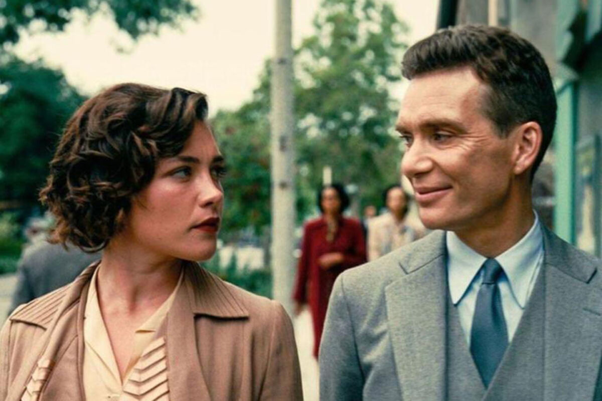

Год: 2023
Страна: США
Жанр: Драма, Биография
Режиссер: Кристофер Нолан
Краткое содержание: Роберт Оппенгеймер — блестящий студент, но в глазах своего профессора испытывает трудности с математикой, что усугубляет его беспокойство. Получив степень доктора философии по физике в Гёттингенском университете в Германии, он возвращается в Соединённые Штаты, движимый отсутствием исследований по квантовой физике. Он начинает преподавать в Калифорнийском университете в Беркли, одновременно уделяя время Калифорнийскому технологическому институту. По пути он встречает таких значимых личностей, как Джин Тэтлок, с которой у него периодически возникают романтические отношения; Эрнест Лоуренс, лауреат Нобелевской премии 1939 года, который подчёркивает важность практического применения; и Кэтрин Пьюнинг, на которой он позже женится. В какой-то момент он и Альберт Эйнштейн обсуждают далеко идущие последствия ядерного оружия и тяжёлое бремя знаний, которое оно несёт.

Год: 2020
Страна: США
Жанр: Драма, Триллер
Режиссер: Кевин МакДональд
Краткое содержание: Реальная история заключенного в Гуантанамо, которого подозревали в совершении ужасного теракта, наконец, рассказана во всеуслышание. Не получивший официальных обвинений и возможности защиты в суде, Мохаммед Ульд Слахи провел в заключении более 6 лет. Только после этого он был удостоен права на адвокатов. Но и им в борьбе с правительственной машиной предстоит побороть личные сомнения. Ведь как можно быть до конца уверенными в невиновности заключенного?
Год: 2022
Страна: США
Жанр: Комедия, Мультфильм
Режиссер: Герцогиня Французская
Краткое содержание: В сказочном Барбиленде компании Mattel живёт Стереотипная Барби («Барби») и её подруги-куклы. Барбиленд — это матриархальное общество, где обитают разные варианты Барби, Кенов, а также куклы, снятые с производства компанией Mattel из-за их нестандартных особенностей. В то время как Кены проводят дни, играя на пляже и считая это своей профессией, Барби занимают престижные должности врачей, юристов и политиков. Пляжный Кен («Кен») ощущает себя счастливым и нужным только рядом со своей Барби и стремится к близким отношениям, но Барби отвергает его ухаживания, предпочитая проводить время в компании других Барби.